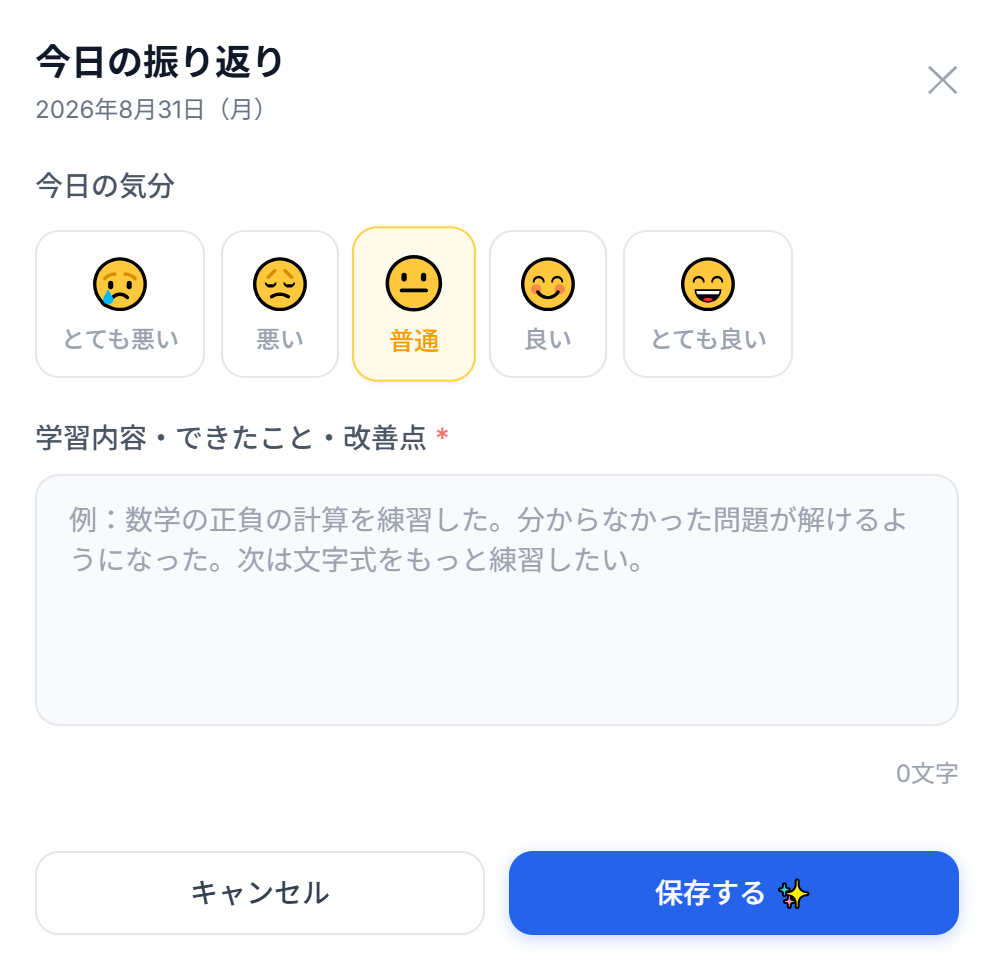
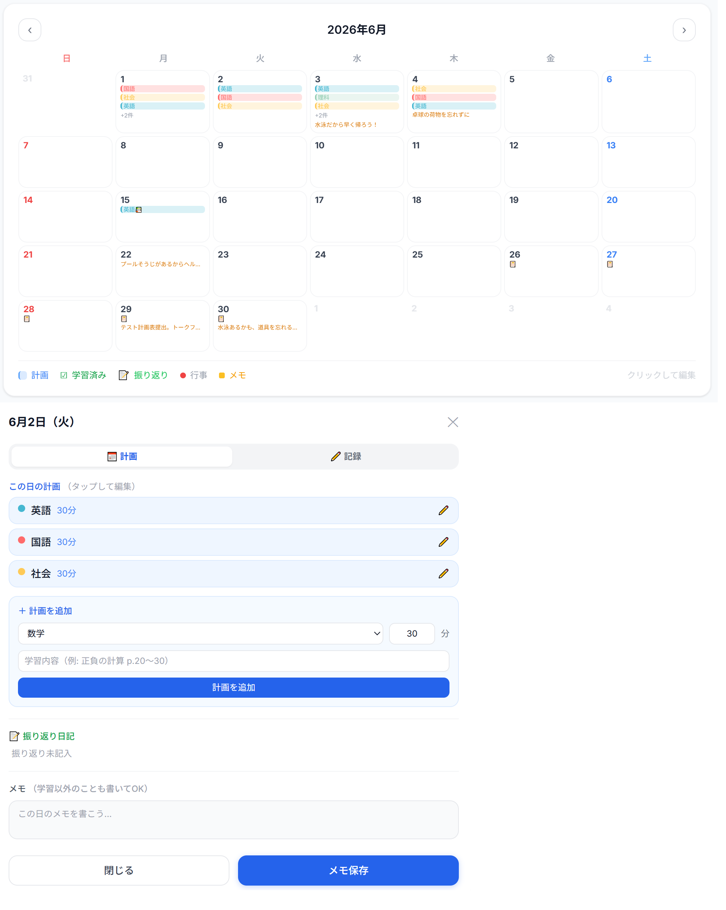
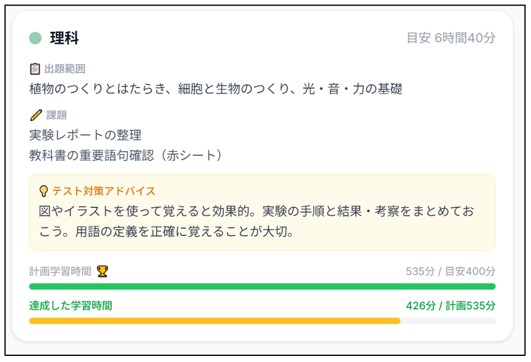
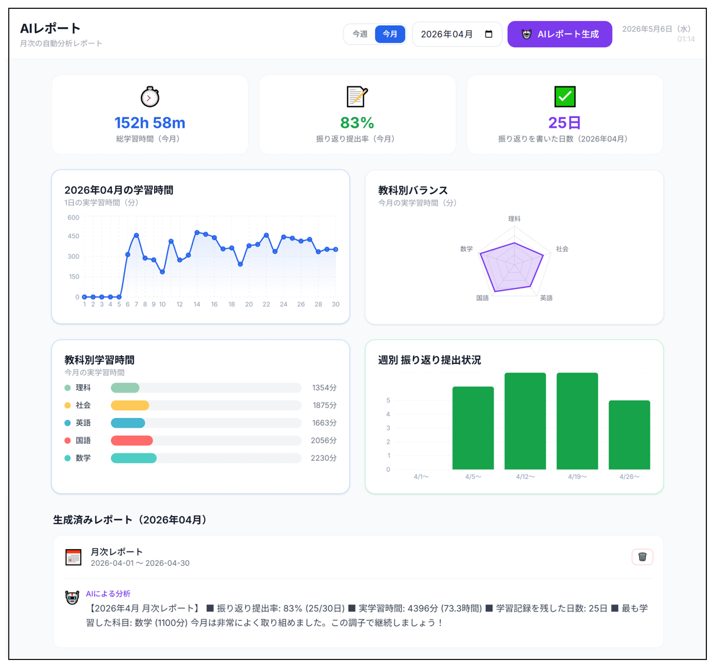
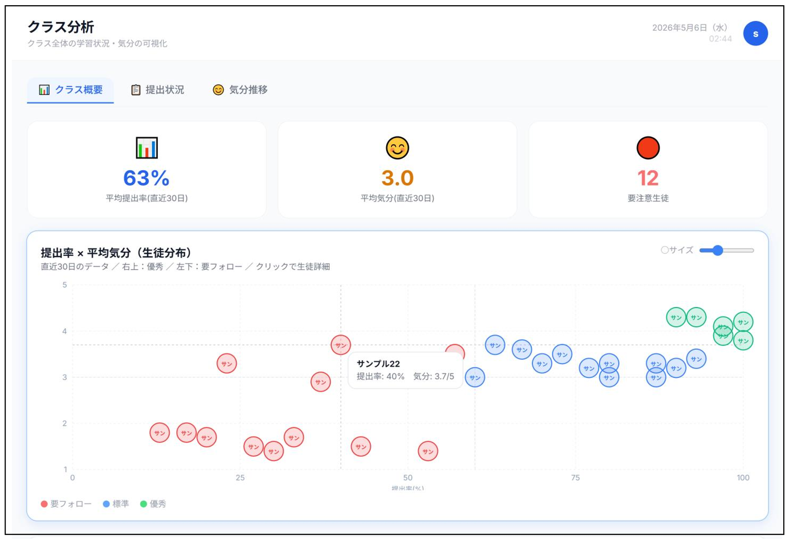
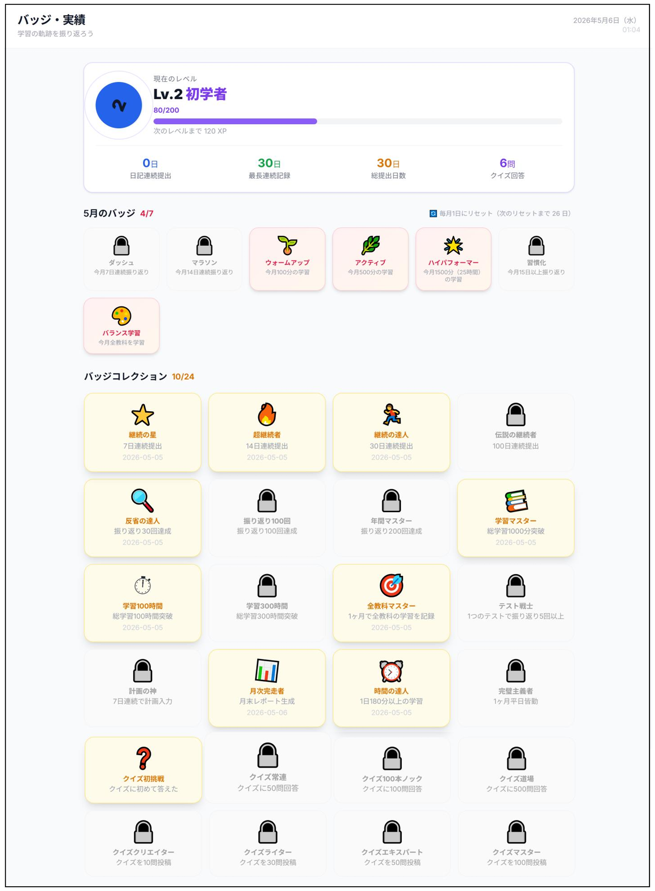

機能一覧
生徒と先生、両方をサポート
学習記録・計画・テスト対策・AI分析・アラートをひとつのシステムに統合しています。

気分・努力度・満足度を5段階で毎日記録する振り返りフォームです。自分の状態を数値化することで、学習への向き合い方の変化に気づけます。記録は7日間のカレンダービューでいつでも振り返ることができます。
気分・努力度・満足度を5段階入力
毎日のコンディションをシンプルに記録。入力は30秒以内で完了します。
7日間カレンダービュー
1週間の記録を一覧表示。気分のムラや疲労のパターンが一目でわかります。
ストリーク（連続記録）機能
何日連続で記録したかを表示。継続の達成感がモチベーションを維持します。
自由記述コメント欄
その日感じたことや困ったことを自由に書き残せます。先生への間接的なSOSにもなります。

週間カレンダービューで教科別の学習計画を立てて管理できます。「何をいつやるか」を事前に決めることで、計画的な学習習慣が身につきます。バーチャートで学習量の教科間の偏りも視覚的に把握できます。
週間カレンダービュー
月〜日の7日間に教科・内容・時間を入力して計画を作成。ドラッグ操作で簡単に変更できます。
教科別バーチャート
各教科の学習時間をグラフで比較。「数学ばかり・英語が手薄」などの偏りを一目で発見できます。
計画 vs 実績の比較
立てた計画と実際に学習した時間を比較して振り返れます。自己調整力の向上につながります。

テスト期間中に特別に起動するモードです。テストまでの日数カウントダウン、教科ごとの出題範囲・アドバイス管理、ストレス/自信の推移グラフで、テスト対策を総合的にサポートします。
テストまでのカウントダウン
残り日数を大きく表示。「あと◯日」が常に意識され、計画的な対策を促します。
教科ごとの範囲・アドバイス管理
各教科の出題範囲と教師からのアドバイスをカード形式で確認。優先度を整理できます。
ストレス・自信の推移グラフ
テスト期間中のストレスと自信の変化を折れ線グラフで可視化。状態変化を先生が把握できます。
テスト期間専用の振り返りフォーム
テスト後に「できたこと・次への課題」を記録するフォームが自動で表示されます。

Azure OpenAI（GPT）が月次・テスト期間のデータをまとめて自動分析します。学習量・気分の傾向・改善点を文章で生成し、教科別の円グラフとセットでわかりやすく表示。保護者向けにPDF出力も可能です。
月次AI分析レポートの自動生成
1ヶ月のデータをAIがまとめ、学習の振り返りコメントを自動作成します。
教科別学習時間の円グラフ
どの教科にどれだけ時間をかけたかを円グラフで表示。バランスの偏りが一目でわかります。
PDF出力・Google Drive自動保存
レポートをPDFで書き出してGoogle Driveに保存。保護者への配布や面談資料として活用できます。
テスト期間レポートにも対応
テスト期間中のストレス変化・学習量・自信の推移を専用フォーマットでまとめます。

生徒の記録データをAIがリアルタイムで監視し、異常なパターンを検知すると自動でアラートを生成します。ルールベースの判定とAI深層分析の2段構えで、見えにくいSOSを早期にキャッチします。クラス全体の提出率・気分推移・学習バランスはグラフで一括把握できます。
緊急アラート（Critical）
「死にたい」などの深刻なキーワードをAIが検知した場合に即時通知します。
高アラート（High）
3日間の気分平均が2以下・ストレス急上昇など、継続的な低下パターンで発火します。
中アラート（Medium）
提出3日連続未記録・努力度の持続的な低下など、習慣の乱れを検知します。
クラス分析ダッシュボード
提出率・クラス平均気分・教科別学習量をグラフで一覧。気になる生徒を素早く特定できます。

XP（経験値）・レベルアップ・多数のバッジシステムで、継続して記録したくなる仕組みを作りました。記録を続けるほど実績が解放され、学習習慣が楽しみながら定着します。
XP・レベルシステム
振り返りを記録するたびにXPを獲得。レベルが上がるとアバターや称号が変化します。
多様なバッジコレクション
「7日連続記録」「テスト対策完了」「クイズ100問達成」など、達成条件ごとに異なるバッジが解放されます。
実績ページで一覧確認
獲得済み・未獲得のバッジをまとめて表示。次の目標が明確になり継続動機につながります。
技術仕様
| 項目 | 内容 |
|---|---|
| フレームワーク | React 18 + TypeScript |
| ビルドツール | Vite |
| スタイリング | Tailwind CSS + Framer Motion |
| グラフ | Recharts |
| 状態管理 | Zustand（persist） |
| バックエンド | Google Apps Script (V8) |
| データベース | Google スプレッドシート（10シート） |
| AI | Azure OpenAI（GPT-3.5 / 4o） |
| PDF生成 | GAS HTML→PDF + Google Drive |